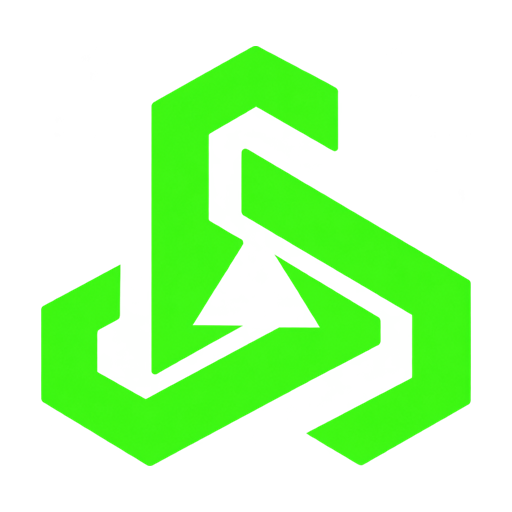

Synapse Lite
Your peripherals. Less overhead.
A native Rust peripheral manager with familiar controls, local profiles, a lighting editor and the existing secbird CLI.
In development. Device support varies. Some lighting and input features remain incomplete; full parity and the final memory target are not yet established.
Local control
Device settings, profiles, macros and supported Studio effects. No advertising, account requirement or telemetry in the native app. Windows desktop and CLI; Linux CLI support.
The same tooling
Keep your scripts. The command remains secbird, with device selection, profile backup/import and local file inspection. Read the CLI guide for examples.